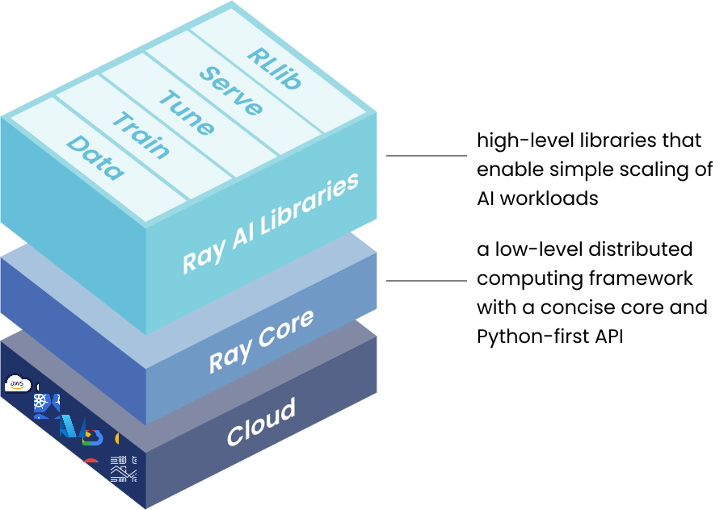
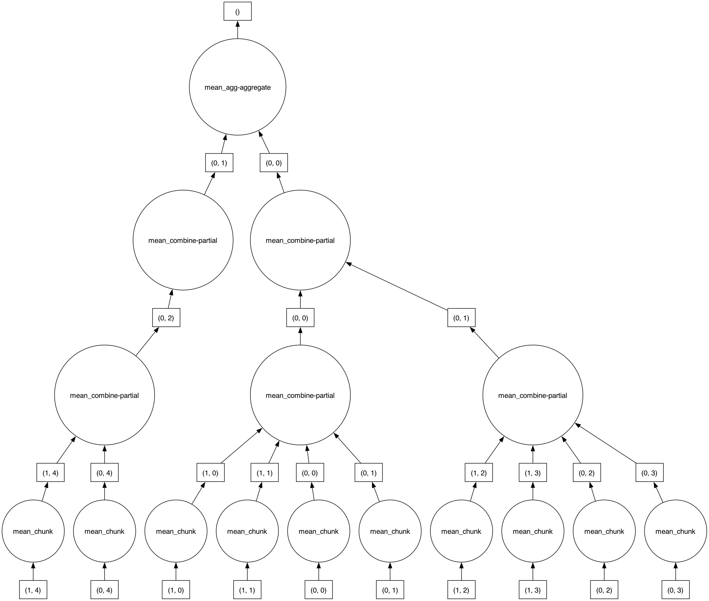

import numpy as np
import dask.array as da
data = np.arange(100_000).reshape(200, 500)
a = da.from_array(data, chunks=(100, 100))
a
|
||||||||||||||||
A deep dive into cluster parallel computing
Here’s a structured outline for your lecture comparing Dask and Ray from a programming paradigm perspective


import numpy as np
import dask.array as da
data = np.arange(100_000).reshape(200, 500)
a = da.from_array(data, chunks=(100, 100))
a
|
||||||||||||||||
mean_graph = a.mean()
mean_graph.visualize()
result = mean_graph.compute()
resultnp.float64(49999.5)import ray
@ray.remote
class Counter:
def __init__(self):
self.value = 0
def increment(self):
self.value += 1
return self.value
# Create actor instances
counters = [Counter.remote() for _ in range(4)]
# Increment counters in parallel
ray.get([counter.increment.remote() for counter in counters])[1, 1, 1, 1]| Feature | Dask | Ray |
|---|---|---|
| Paradigm | Task graph (functional) | Actor model (OOP) |
| State | Stateless (pure functions) | Stateful (actor instances) |
| Scheduling | Static graph optimization | Dynamic task scheduling |
| Best for | Array/collection operations | Heterogeneous workloads |
# Dask version (graph-based)
import dask.bag as db
bag = db.read_text('large_file.txt')
result = bag.map(lambda x: x.upper()).compute()# Ray version (actor-based)
@ray.remote
def process_line(line):
return line.upper()
with open('large_file.txt') as f:
lines = f.readlines()
results = ray.get([process_line.remote(line) for line in lines])# Dask-ML example
from dask_ml.linear_model import LogisticRegression
from dask_ml.datasets import make_classification
X, y = make_classification(n_samples=100000, chunks=1000)
clf = LogisticRegression()
clf.fit(X, y)# Ray Train example
from ray.train.xgboost import XGBoostTrainer
trainer = XGBoostTrainer(
label_column="target",
params={"objective": "binary:logistic"},
datasets={"train": ray.data.from_pandas(df)},
)
result = trainer.fit()Dask excels at:
Ray excels at:
# Using both together
import dask.dataframe as dd
import ray
# Process data with Dask
ddf = dd.read_csv('large_dataset.csv')
processed = ddf.groupby('category').mean()
# Use Ray for model serving
@ray.remote
class ModelServer:
def __init__(self, model):
self.model = model
def predict(self, data):
return self.model.predict(data)
# Convert Dask results to Ray tasks
model = train_model(processed.compute())
servers = [ModelServer.remote(model) for _ in range(4)]Choose Dask if:
Choose Ray if: